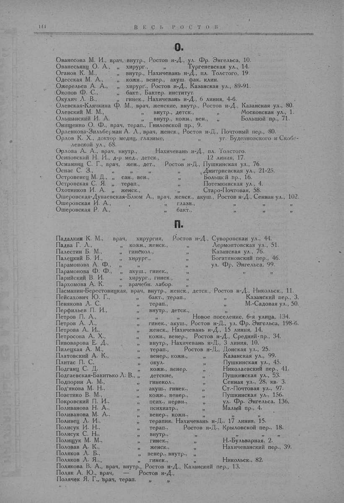

Лист источника 194
Скан

Распознанный текст
144 ВЕСЬ РОСТОВ
О.
Ованесова М. И., врач, внутр., Ростов н-Д., ул. Фр. Энгельса, 10.
Ованесьянц О. А., „ хирург., „ Тургеневская ул., 14.
Оганов К. М., „ внутр., Нахичевань н-Д., пл. Толстого, 19.
Одесская М. А., „ кожн., венер., акуш. фак. клин.
Ожерельев А. А., „ хирург., Ростов н-Д., Казанская ул., 89-91.
Окопов Ф. С., „ бакт., Бактер. институт.
Окулич Л. В., „ гинек., Нахичевань н-Д., 6 линия, 4-б.
Олевская-Клячкина Ф. М., врач, женские, внутр., Ростов н-Д., Казанская ул., 80.
Олевский М. М., „ внутр., детск., „ Московская ул., 1.
Ольшанский И. А. „ внутр., кожн., вен., „ Большой пр., 71.
Онищенко О. Ф., врач, терап., Гниловской пр., 9.
Орленкова-Зильберман А. Л., врач, женск., Ростов н-Д., Почтовый пер., 80.
Орлов К. Х., доктор медиц, глазные, „ уг. Буденновского и Скобе-
левской ул., 68.
Орлова А. А., врач, внутр., Нахичевань н-Д., пл. Толстого.
Осиповский Н. И., д-р мед., детск., „ 12 линия, 17.
Османянц С. Г., врач, жен., дет., Ростов н-Д., Пушкинская ул., 76.
Оснас С. З., „ „ „ Дмитриевская ул., 21-25.
Островенец М. Д., „ сан., вен., „ Большой пр., 16.
Островская С. Я. „ терап., „ Потемкинская ул., 4.
Охотников И. А. „ женск., „ Старо-Почтовая, 58.
Ошеровская-Дунаевская-Блюм А., врач, женск., акуш., Ростов н-Д., Сенная ул., 102.
Ошеровская И. А., „ глазн., „ „ „
Ошеровская Р. А., „ бакт., „ „ „
П.
Падалкин К. М., врач, хирургия, Ростов н-Д., Суворовская ул., 44.
Падва Г. Л., „ кожн., женск., „ Лермонтовская ул., 51.
Палестин Б. М., „ гинекол., „ Казанская ул., 76.
Палецкий Б. И., „ хирург., „ Богатяновский пер., 46.
Парамонова А. Ф., „ „ „ ул. Фр. Энгельса, 99.
Парамонова Ф. Ф., „ акуш., гинек., „ „ „
Парийский В. И. „ хирург., гинек., „ „
Пархомова А. К. „ врачебн. лабор. „
Пасманин-Берестовицкая, врач, внутр., женск., детск., Ростов н-Д., Никольск., 11.
Пейсахович Ю. Г., „ бакт., терап., „ Казанский пер., 3.
Пенякова Л. С. „ терап., „ М.-Садовая ул., 50.
Перфильев П. И., „ внутр., детск., „
Петров П. А., „ „ Новое поселение, 6-я улица, 134.
Петров А. Л., „ гинек., акуш., Ростов н-Д., ул. Фр. Энгельса, 198-б.
Петрова А. И., „ женск., Нахичевань н-Д., 15 линия, 14.
Петросова А. Х., „ кожн., венер., Ростов н-Д., Средний пр., 34.
Пивоварова Е. Д., „ внутр., Нахичевань н-Д., 3 линия, 10.
Пилецкая А. М., „ терап., Ростов н-Д., Донская ул., 25.
Платовский А. К., „ венер., кожн., „ Казанская ул., 99.
Плитас П. С. „ окул. „ Пушкинская ул., 45.
Подганц С. Д. „ кожн., венер. „ Николаевский пер., 41.
Подгаевская-Бакытько Л. В., „ детские, „ Пушкинская ул., 53.
Подпорин А. М., „ гинекол., „ Сенная ул., 28, кв. 3.
Под'якова М. Н., „ акуш., гинек., „ Ст.-Почтовая ул., 97.
Позетико В. М., „ кожн., венер., „ Пушкинская ул., 156.
Покровский П. И., „ псих., нервн., „ ул. Фр. Энгельса, 136.
Поливанова Н. А., „ психиатр., „ Малый пр., 4.
Поливанова М. А., „ венер., кожн., „
Поливец Л. И., „ терапия, Нахичевань н-Д., 17 линия, 15.
Полисук И. Н., „ терап., Ростов н-Д., Крыловской пер., 18.
Полисук С. Н., „ внутр., „ „ „
Полищук М. М., „ гинек., „ Н.-Бульварная, 2.
Половав А. К., „ женск., „ Нахичеванский пер., 39.
Поляков Л. Б., „ венер., внутр., „
Поляков Л. Я., „ гинек., „ Никольск., 82.
Полякова В. А., врач, внутр., Ростов н-Д., Казанский пер., 13.
Поляк А. Ю., врач, Ростов н-Д.,
Полячек Я. Г., врач, терап. „ „